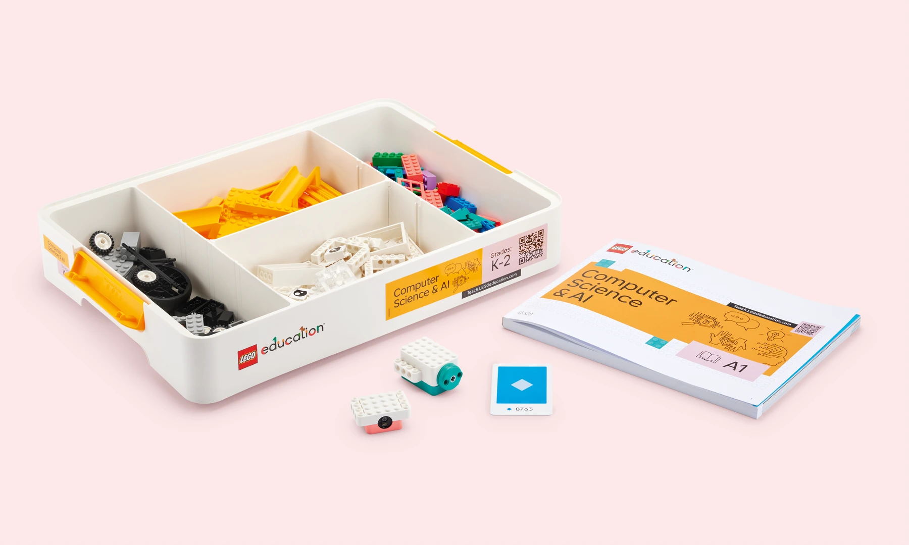
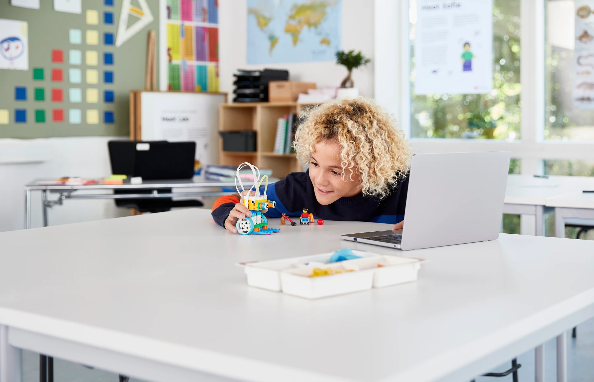
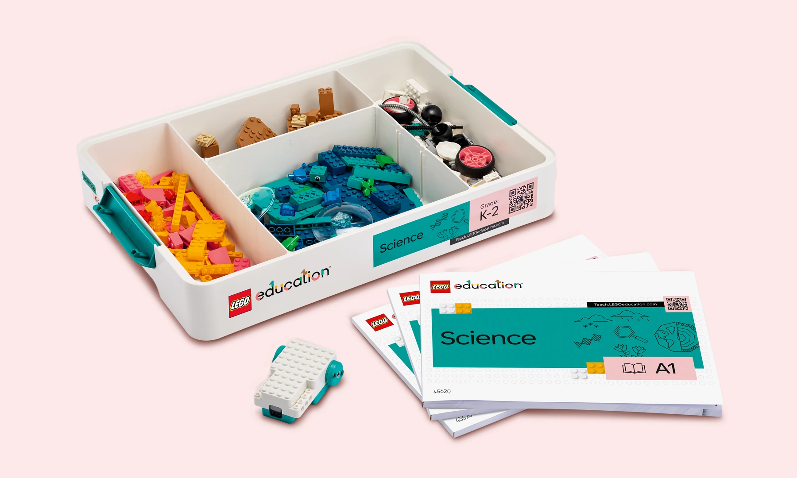

2026.08 구매 결론
DECISION FIRST

1순위 · 9월까지 기다릴 수 있다면
Computer Science & AI K–2
시퀀스·이벤트·루프·AI를 직접 다루는 현행 제품. 국내 공개가 49만원.

SPIKE Essential
직접 블록 코딩과 센서 피드백. 단, 단종 재고·중고는 가격과 상태 확인이 필수.

Science K–2
과학 탐구와 조립·실험 입문에 강함. 코딩은 가능한 확장이지 수업의 중심은 아님.